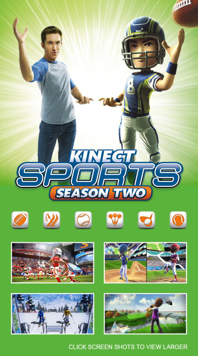

|  | |
| Playtime | Not Played |
| Last Activity | 4/25/2014 17:14:21 |
| Added | 4/24/2025 1:30:35 |
| Modified | 4/30/2025 7:54:05 |
| Completion Status | Not Played |
| Library | Xbox |
| Source | Xbox |
| Platform | Microsoft Xbox 360 |
| Release Date | 10/25/2011 |
| Community Score | 60 |
| Critic Score | 66 |
| User Score | |
| Genre | Sports |
| Developer | BigPark Rare |
| Publisher | Microsoft Studios |
| Feature | Multiplayer Single Player |
| Links | Wikipedia Kinect Sports: Season Two at Xbox.com Kinect Sports: Season Two at Rare MobyGames |
| Tag | |
Kinect Sports: Season Two is a sequel to Kinect Sports co-developed by Rare and BigPark, and published by Microsoft Studios. It was unveiled at E3 2011's Microsoft Conference for Kinect and released in October 2011. The game adds six new sports and voice control. As with the previous game, it requires the Kinect sensor. Along with its predecessor Kinect Sports, it has been released in the Kinect Sports Ultimate Collection bundle on 18 September 2012 with additional bonus content and extra sports in Season Two added, basketball, golf and skiing.
Kinect Sports: Season Two consists of six sports which can be accessed from the main menu, which can be played in single or multiplayer: golf, darts, baseball, skiing, tennis, and American football. The games are controlled through Microsoft's Kinect device, which allows players to control the game through gestures and speech recognition without the need of any physical game controller. The player controls the sports by mimicking how the sports are played in real life without the equipment that usually is associated with them; for example, swinging one's arms as if they were holding a golf club or kicking to score a field goal in American football. The Kinect's voice command technology is utilized more frequently than in the game's predecessor, Kinect Sports, with the game containing over 300 voice commands.
Rare has shown the American football game's two-player gameplay, where one user controls the quarterback and another the receiver during a game. The player mimes throwing a football towards the receiver, where the other person mimics catching it. A field goal trial was demonstrated during the Electronic Entertainment Expo (E3), which allowed the user to attempt to kick a field goal by completing a kicking motion. In golf, the player can use voice commands to switch clubs without having to move to a menu, and swing their hands as if holding a club. The game features Xbox Live competition, and allows players to challenge each other in multiplayer modes.
Kinect Sports: Season 2 includes 74 songs in its soundtrack including popular songs licensed from record labels as well as its own unique theme "Take it Back" composed by British composer Robin Beanland. The main theme, "Take it Back", is played on the main menu as well as in many different remixed forms for each sport's menu.
Microsoft demonstrated golf and American football at E3 2011. Reaction from demos for golf were positive; Tom Hoggins of The Daily Telegraph called the golf game "excellent fun" and stated that the game overall felt like "a highly refined, more complete version of the first game". The American football demonstration was subject to more mixed reaction. IGN's Peter Eykemans complimented the Kinect's sensitivity toward his missed field goal kick, noting that as he accidentally kicked the floor in real life, his avatar likewise failed to hit the football properly in the game. GameSpot's Tom McShea voiced concerns from the E3 demonstration of American football, noticing how the demonstrator's attempts to throw to the receiver in the multiplayer game for the most part failed to work properly.
Upon release, the game received "average" reviews according to the review aggregation website Metacritic.
Common Sense Media gave the game four stars out of five, saying, "Perhaps most importantly, Kinect Sports: Season Two is just as much of a workout as the original. Play for two hours and you'll burn off a couple hundred calories and wake up with stiff muscles in the morning. It should act as a fun and healthy way for families to spend active days indoors when the weather isn't cooperating." However, Digital Spy gave it three stars out of five, calling it "a case of one step forward and one step back. Games such as darts, golf, baseball and skiing are intuitive [and] responsive and make wonderful motion-controlled mini-games, while American football and tennis are poorly executed and offer little in the way of enjoyment." Metro similarly gave it a score of six out of ten, saying that it was "Still the best party game on Kinect but the new sports are a mixed bag and the motion controls remain as inconsistent as always."